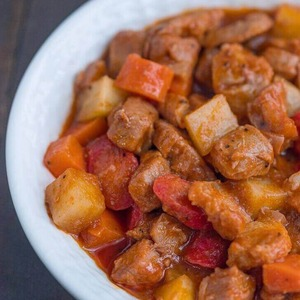

Pork Menudo
The ultimate Filipino Comfort Food

In almost every Philippine town fiestas or gatherings, Pork Menudo can be seen in the dining table. This is one of the favorite “putahe” (dish) served and this was the reason why different variations of this dish existed.
Ingredients
- 2 lbs. pork
- 1/4 lb. pig liver
- 1 cup potatoes
- 1 piece carrot
- 1/2 cup soy sauce
- 1/2 piece lemon
- 1 piece onion
- 3 cloves garlic
- 1 teaspoon sugar
- 3/4 cup tomato sauce
- 1 cup water
- 4 pieces hotdogs
- 2 tablespoons cooking oil
- 2 to 3 pieces dried bay leaves
- Salt and pepper to taste
Instructions
- Combine pork, soysauce, and lemon in a bowl. Marinate for at least 1 hour.
- Heat oil in a pan
- Saute garlic and onion.
- Add the marinated pork. Cook for 5 to 7 minutes.
- Pour in tomato sauce and water and then add the bay leaves.Let boil and simmer for 30 minutes to an hour depending on the toughness of the pork. Note: Add water as necessary.
- Add-in the liver and hot dogs.Cook for 5 minutes.
- Put-in potatoes, carrots, sugar,salt, and pepper. Stir and cook for 8 to 12 minutes.
- Serve. Share and enjoy!